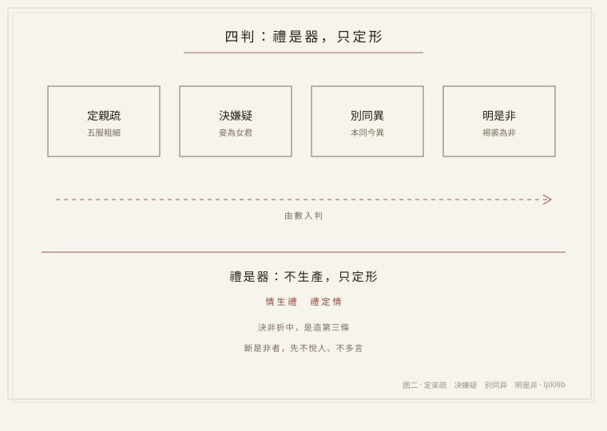

曲礼上 · 一·十 · 第 9 课
前八课都是一句一条戒律：不要这样，不要那样。到一·十，忽然抬头，给出一句总纲——礼是四件事的判准。
说什么事：礼用来定亲疏的远近、决嫌疑的疑似、别同异的混淆、明是非的失当。
落在哪一层：义。这八字不戒人，它说的是「礼是什么」。
为何编在此位：一·三至一·九讲的都是具体分寸；分寸多了，容易只见条文，不见条文所治何事。故在此交代条文背后那四件活。
【经】夫禮者，所以定親疏，決嫌疑，別同異，明是非也。
夫 发语之词，提起全句。此字一落，以下不是戒人，是下定义。
所以 用来。礼是器，四者是所器之事。不说「礼者，亲疏也」，而说「礼者，所以定亲疏」——礼不生产亲疏，它只把亲疏定住。
定 使不定者定。疏：「五服之内，大功已上服粗者为亲，小功已下服精者为疏。」
决 判决。疏：「妾为女君期，女君为妾若报之则太重，降之则有舅姑为妇之嫌，故全不服，是决嫌疑。」
别 分开。疏：本同今异者，姑姊妹；本异今同者，世母叔母及子妇。
明 判其是非。疏：子游裼裘而吊为是，曾子袭裘而吊为非。
礼这件东西，是用来定亲疏的远近、决嫌疑的疑似、别同异的混淆、明是非的失当的。
礼不是条文的总集，是四件事的判准：亲疏、嫌疑、同异、是非。
第一层 「所以」二字 礼不是亲疏本身。亲疏是情，礼只是把它定住。情能生礼，也能乱礼，故须一件外物来定。这一层最要紧：若把礼当成情的直写，情一变礼就亡；若把礼当成外加的束缚，礼就成苛。这里给的是第三条路——礼是「所以」，是器；器不生产，器只定形。
第二层 四判的分工 亲疏是远近，嫌疑是疑似，同异是类别，是非是得失。四者一层比一层深：远近可数（五服），疑似须断（妾为女君），类别须辨（姑姊妹与世母），得失须判（子游、曾子）。礼在此像四把尺，一把比一把细。
第三层 决嫌疑最难 「嫌疑」不是「怀疑」，是「像而难分」。疏举妾为女君：服之则太重，降之则有舅姑为妇之嫌，故全不服。既不能多，也不能少，只好另立一条。这就是「决」的本相：不是二选一，是造出第三条。
第四层 明是非最险 子游裼裘而吊，曾子袭裘而吊，同在丧礼，一是一非。疏不辩理，只断。此处最险：谁来断？礼断，不是人断。故下文紧接「礼不妄说人，不辞费」——持尺的人，先要不受悦、不多言。
与今日何干 今日最爱说「这是礼」「这不礼貌」。此句给一测量：你说的这一条，是亲疏、是嫌疑、是同异、还是是非？四样都对不上，那多半只是习惯，或只是喜好。
| 左 | 右 |
|---|---|
| 定亲疏：五服大功以上服粗 | 决嫌疑：妾为女君，全不服 |
| 别同异：姑姊妹本同今异 | 明是非：裼裘为是，袭裘为非 |
| 情生礼，礼定情 | 礼是器：不生产，只定形 |
| 决非折中，是造第三条 | 持尺者先不悦人、不多言 |
画四把尺并置案上，长短依次递增：第一把刻五道，第二把只刻一道深痕，第三把刻两段相接，第四把无刻，只落一枚墨点。尺下压一张素纸。不画人。赭色只在第二把的深痕与第四把的墨点。
